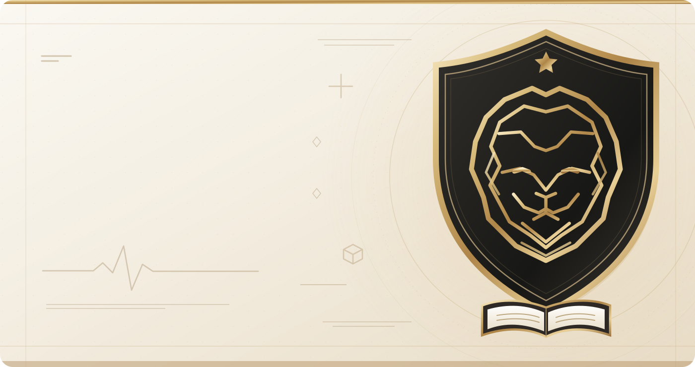

KIDBUM · BANCO DE CONOCIMIENTO
Preguntas directas
Conceptos, mecanismos, fisiopatología, criterios diagnósticos, tratamientos y datos clave. Aquí no hay casos clínicos: cada pregunta va directo al conocimiento.
Preparando preguntas directas…
Cargando banco local educativo.